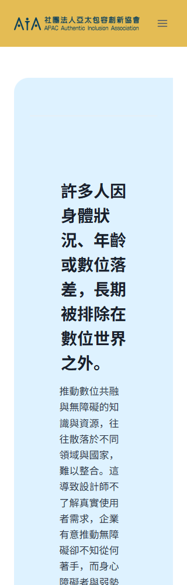
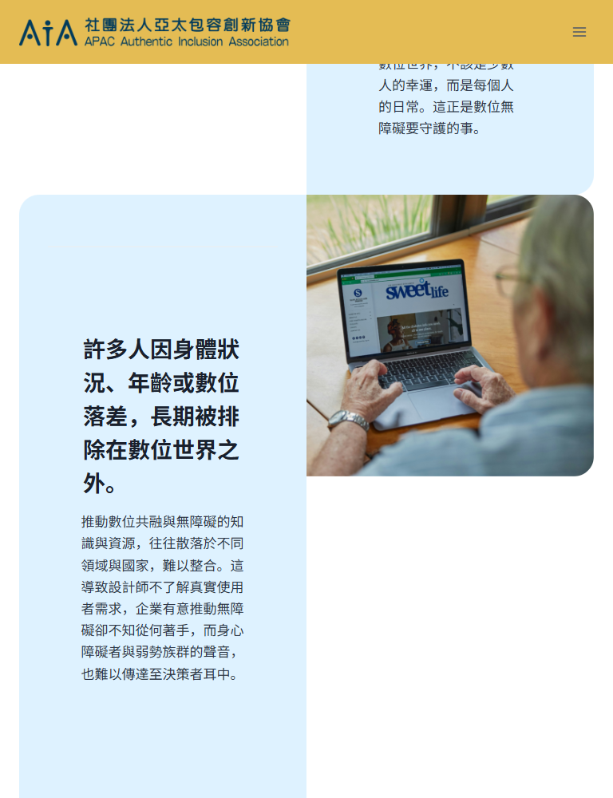
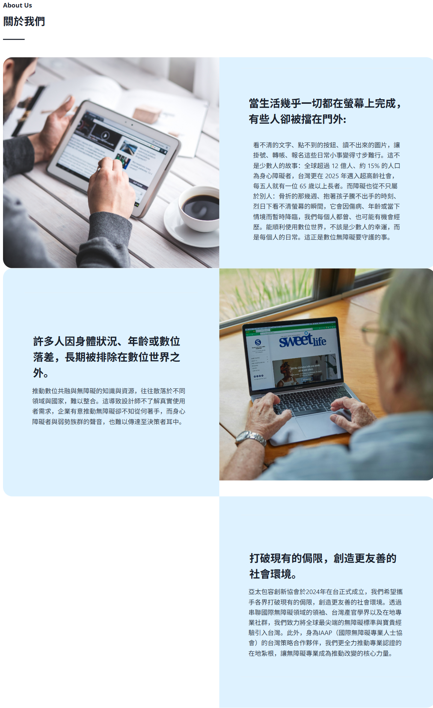

補上瀏覽器與螢幕閱讀器會讀到的頁面標題
目前 <title> 是空的。分頁標籤、書籤和螢幕閱讀器的頁面清單都無法辨識這是哪一頁。
WordPress：補上首頁 SEO title，例如「亞太包容創新協會｜APAC AIA」。
完成標準：瀏覽器分頁不再空白；Lighthouse 的 Document title 通過。
AIA WEBSITE REVIEW · 2026-07-30
給設計與 WordPress 製作人員的修正說明。首頁與 ADALS 活動頁分開記錄；本頁只談首頁。
首頁目前有 7 項上線前應先處理的問題。其中「關於我們」三組圖文卡確實需要改 CSS：320px 的文字被左右留白擠窄，768px 仍維持兩欄，造成圖片與文字卡高度落差。這不是要重做視覺，而是修正響應式規則。
首頁需要先上線，用來展示協會資訊、宣傳活動，並承接購票入口，因此不必等待整套版面調整完成。以下 CSS 先在保留的 staging 驗證，確認不同寬度沒有斷版，再套到正式站。這次只做 live 網頁的只讀檢查，沒有修改正式網站或 staging。
螢幕閱讀器測試範圍：本次沒有執行 NVDA、JAWS 或 VoiceOver 實機走查。下方提到的影響，是根據 HTML heading 結構與 accessibility tree 判斷，不是已完成的語音操作測試。目前 heading 層級不完整，因此標題導覽不能判定為通過；修正後仍需重新進行完整螢幕閱讀器走查。
目前 <title> 是空的。分頁標籤、書籤和螢幕閱讀器的頁面清單都無法辨識這是哪一頁。
WordPress：補上首頁 SEO title，例如「亞太包容創新協會｜APAC AIA」。
完成標準：瀏覽器分頁不再空白；Lighthouse 的 Document title 通過。
目前 H1 後直接出現 H4；六個年份、三張「我們創造什麼連結」卡和四個議題使用 H5。「三大價值」區段內三張完整卡片的名稱只是粗體文字，不是標題。螢幕閱讀器用標題清單瀏覽時，會看到不連續且不完整的頁面大綱。頁首插圖下方重複出現的三個價值摘要沒有各自帶領內文，應維持一般文字。
為什麼列為上線前高優先：這不是字級或視覺樣式問題，而是整頁的導覽骨架沒有正確反映畫面上的內容關係。只看畫面時，仍可利用位置、卡片背景和字體大小判斷章節；螢幕閱讀器使用者則常透過標題清單或逐個標題跳轉，快速找到想看的區段，不會每次都從頁首逐字讀完整頁。
結果不是文字完全讀不出來，而是使用者較難快速判斷目前位於哪個區段、哪些項目屬於同一組，以及如何直接跳到需要的內容。單純從 H2 跳到 H5 並不必然等於 WCAG 違規；此處需要修正的原因，是目前的 heading 標記沒有忠實表達畫面已呈現的結構與關係，涉及 WCAG 1.3.1 資訊及關係，也影響 WCAG 2.4.6 標題與標籤所要求的定位與理解。
修正方式：在 WordPress 將對應區塊改成正確的 HTML heading level，並以 CSS 維持原有字級、粗細、顏色與間距。這項調整影響整頁導覽，建議在上線前完成。
完成標準：全頁保留一個 H1；主要區段為 H2；各區段內有獨立說明內容的卡片名稱與年份為 H3；hero 標語改成一般段落；頁首三個價值摘要維持一般文字。字級、粗細與顏色不必因此改變。
「多元共融／以人為本／科技創新」上方的三個藍色圖案只是裝飾，圖案下方已經有完整的中英文文字。Live DOM 顯示「多元共融」已是 alt=""；另外兩個仍分別使用英文替代文字 icon of a person with heart to the right 與 icon of a lightbulb，會在文字標籤之前多出重複且不一致的描述。
WordPress：在編輯器選取「以人為本」與「科技創新」上方的圖片區塊，將 Alt Text／替代文字欄位清空。「多元共融」維持目前設定。圖片仍保留在畫面上，不需要刪除。
上線前 staging 協作：Alt Text 修正需先儲存到 staging，才能依 staging 實際輸出的 HTML 與 accessibility tree 協助確認是否已正確變成 alt=""。確認三個圖案都不再進入 accessibility tree 後，再將相同設定套到正式站。
完成標準：三個圖案的 HTML 都是 alt=""，accessibility tree 不再列出這三個裝飾圖案；下方的中英文文字仍正常顯示。
它由 div 與 span 組成，沒有 href，也不是 button，所以按 Tab 不會停在這裡，滑鼠點擊也沒有可靠的連結目的地。
處理方式：目的頁確定後改成真正的 <a href="…">；若目的頁尚未建立，先不要讓它呈現成可點擊按鈕。
完成標準：鍵盤可聚焦並以 Enter 開啟正確頁面，或在目的頁完成前取消按鈕外觀。
320px 時，標題左右各留 80px；正文還同時使用左右 margin 與 padding，文字只剩約 85–105px 的實際寬度。768px 時仍排成兩欄，每欄 360px，圖片只有約 351–353px 高，文字卡卻高達約 799–957px。
建議 900px 以下改成單欄，三組都維持「圖片 → 文字」順序；900px 以上才排雙欄，並讓圖片以 object-fit:cover 填滿同列高度。
完成標準：320px 文字不再被擠成窄直條；768px 每組圖文改為上下排列；桌面三組圖片與相鄰文字卡等高，沒有圖片下方的空洞。
「論壇活動 Event」與「聯繫 Contact」量測為 4.16:1；目前 17px 一般字重需達 4.5:1。把文字顏色稍微加深即可，不必改黃色導覽背景。
完成標準：一般狀態、hover 與 focus 狀態的文字對比都至少 4.5:1。
頁面根節點目前是 lang="en-US"，但首頁主要可見內容是繁體中文。活動未來若要服務亞太地區，較清楚的做法是建立獨立語言頁；在現況下，這一頁應先標示 zh-TW 或 zh-Hant，完整英文段落再個別標示 lang="en"。
完成標準：頁面根節點反映這一頁實際顯示的主要語言；未來英文版與其他語言版各自使用正確語言標示。



| 寬度 | 目前結果 | 建議版面 |
|---|---|---|
| 320px | 圖文已上下排列，但內文左右留白疊加，文字只剩窄直條。 | 單欄；圖片在前、文字在後；正文保留約 24px 左右安全留白。 |
| 768px | 仍維持兩欄；三張文字卡約 799–957px 高，圖片約 351–353px 高。 | 改成單欄，避免文字與圖片互相擠壓。 |
| 1024px | 兩欄可讀，但圖片比文字卡短約 141–183px。 | 保留兩欄；圖片等高裁切並填滿欄位。 |
| 1280px 以上 | 第一、三組接近等高；第二組仍差約 42px。 | 保留兩欄；圖片以 cover 填滿同列高度。 |
這項 CSS 應納入本次上線。若時間允許，先在 staging 完整驗證，再與本次內容一起套到正式站。若為了活動宣傳與購票入口必須先行上線，可先公開內容，但需保留 staging，並將 CSS 驗證與正式站修正列為上線後立即完成的後續工作。
設定方式：在 WordPress 編輯器的清單檢視中，對三個「關於我們」Row Layout 都加入 home-about-row。每個圖片 Column 加 home-about-image，每個文字 Column 加 home-about-copy。再將以下內容放到 staging 的「外觀 → 自訂 → 額外 CSS」。
/* 文字留白只由同一層控制，避免 margin + padding 疊加 */
.home-about-copy .wp-block-kadence-advancedheading,
.home-about-copy .wp-block-paragraph {
box-sizing: border-box;
width: 100%;
max-width: 40rem;
margin-inline: auto !important;
padding-inline: clamp(24px, 6vw, 64px) !important;
}
/* 桌面：圖片與文字卡等高，圖片維持比例裁切 */
@media (min-width: 901px) {
.home-about-row > .kt-row-column-wrap {
align-items: stretch;
}
.home-about-row .home-about-image,
.home-about-row .home-about-copy {
align-self: stretch !important;
}
.home-about-row .home-about-image,
.home-about-row .home-about-image > .kt-inside-inner-col,
.home-about-row .home-about-image .wp-block-kadence-image,
.home-about-row .home-about-image figure {
height: 100%;
}
.home-about-row .home-about-image img {
display: block;
width: 100%;
height: 100%;
object-fit: cover;
}
}
/* 手機與平板：每組改成圖片在前、文字在後 */
@media (max-width: 900px) {
.home-about-row > .kt-row-column-wrap {
grid-template-columns: minmax(0, 1fr) !important;
}
.home-about-row .home-about-image { order: 1; }
.home-about-row .home-about-copy { order: 2; }
.home-about-row .home-about-image img {
display: block;
width: 100%;
height: auto;
aspect-ratio: 4 / 3;
object-fit: cover;
}
}目前預檢結果：已將上述 class 與 CSS 暫時注入目前的 live DOM，只在本機瀏覽器量測，沒有修改網站。320／768／1024／1280／1440／1742／1920px 均沒有水平捲軸；320／768px 為單欄圖片在前，1024px 以上為兩欄，桌面圖片與文字卡已等高。
仍需在 staging 完成最終驗收：只有實際儲存到 WordPress 後，才能確認 class 加在正確區塊、CSS 載入順序與快取沒有造成差異，並查看三張圖在 768／1024／1440px 的人物主體與裁切效果。確認後再將同一份 CSS 套到正式站。
768px 時「三大價值」仍排三欄，每張卡約 216px，正文實際只剩約 107px；「我們創造什麼連結」也維持三欄。建議這些卡片的外層加入共同 class，例如 home-card-grid，讓欄數依可用寬度自動減少。
.home-card-grid > .kt-row-column-wrap {
grid-template-columns:
repeat(auto-fit, minmax(min(100%, 20rem), 1fr)) !important;
}完成標準：768px 不再出現每行只有少數中文字的窄欄；320／768／1024px 的卡片依空間改成一欄或兩欄。
Facebook、X、Instagram 都有空的 href，鍵盤可以停在上面，但只會回到目前頁面。Facebook 改為 https://www.facebook.com/apacaia/；X 與 Instagram 尚未建立，先移除連結與圖示。
本次找到 19 個圖片 src 與 3 個背景圖仍寫成 http://。瀏覽器目前會自動升級，但內容庫應改成 HTTPS，避免搬站或安全政策改變時載入失敗。
首頁名稱「亞太包容創新協會」已是 H1；需要修的是後續層級，不是新增另一個 H1。
可跳到主要內容，目標存在。
有 main、navigation 與 footer。
320／768／1024／1280／1440／1742／1920px 皆為 scrollWidth = clientWidth。
320px 有可聚焦且有名稱的 Open menu 按鈕。
| 內容 | 目前 | 建議 |
|---|---|---|
| 亞太包容創新協會 | H1 | 保留 H1 |
| 連結國際…… | H4 | 一般段落／視覺標語 |
| 關於我們、三大價值、協會大事記、我們創造什麼連結、我們關注的議題、加入我們的行列、社群媒體 | H2 | 保留 H2 |
| 關於我們三組圖文標題 | H3 | 保留 H3 |
| 三大價值的三張卡片名稱 | 粗體文字 | H3，外觀不變 |
| 協會大事記的六個年份 | H5 | H3，外觀不變 |
| 我們創造什麼連結的三張卡片名稱 | H5 | H3，外觀不變 |
| 我們關注的四個議題名稱 | H5 | H3，外觀不變 |
以 2026-07-30 的 live rendered DOM 為準，進行 Lighthouse desktop／mobile、自動結構檢查、Tab 鍵盤走查、computed style 量測與 7 種寬度截圖。自動工具不會判斷「留白是否讓字欄變得難讀」，所以響應式結論以實際尺寸與人工畫面檢查為主。
尚未涵蓋：NVDA、JAWS、VoiceOver 實機 task walkthrough、真實手機觸控與身心障礙使用者測試。本文件是 staging 修正與複查依據，不是法律認證。
{kind=link}
{kind=link}
{kind=link}